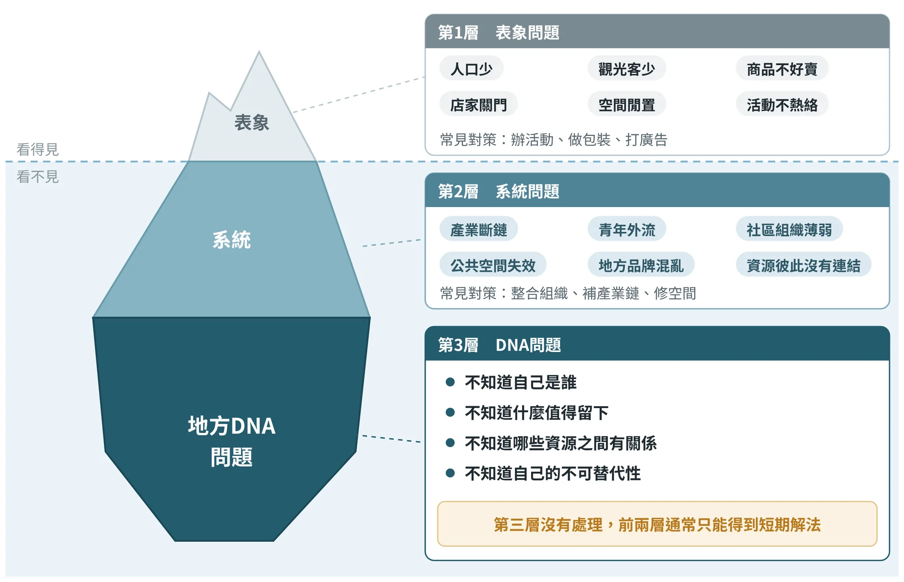
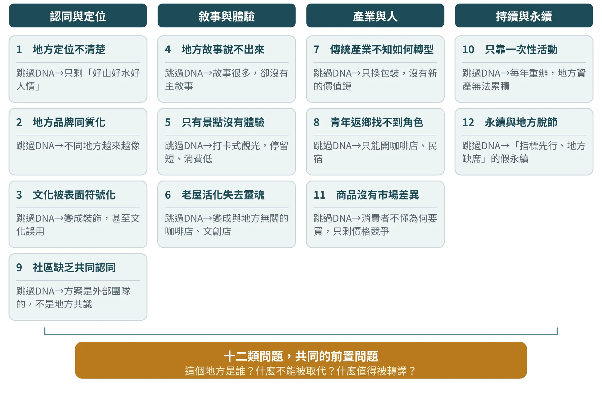
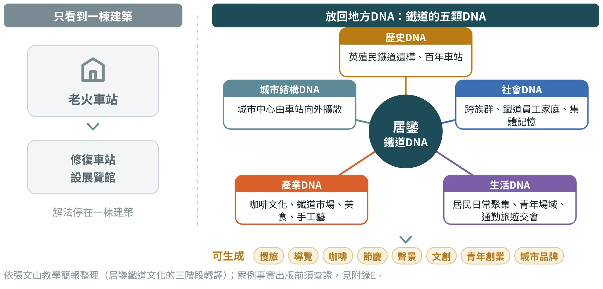
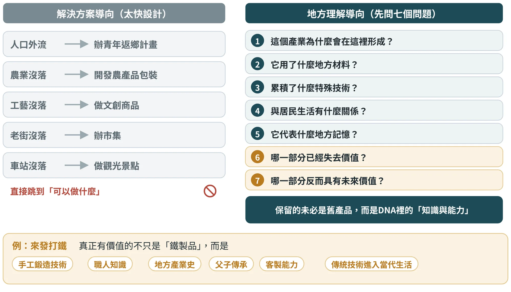
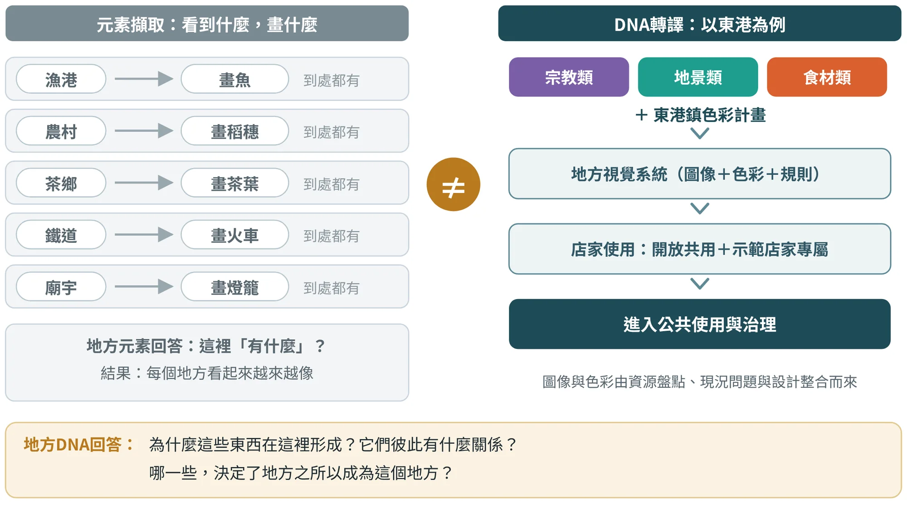
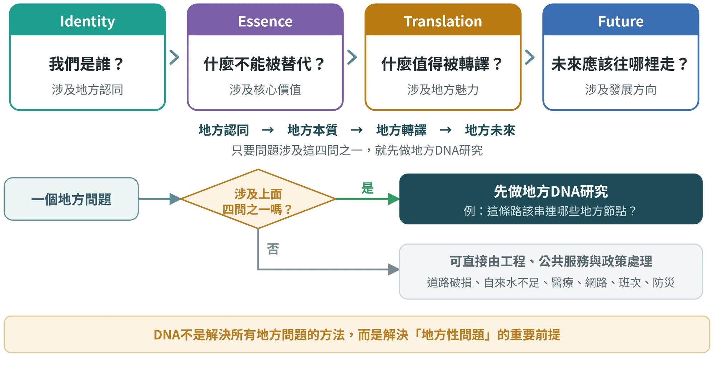
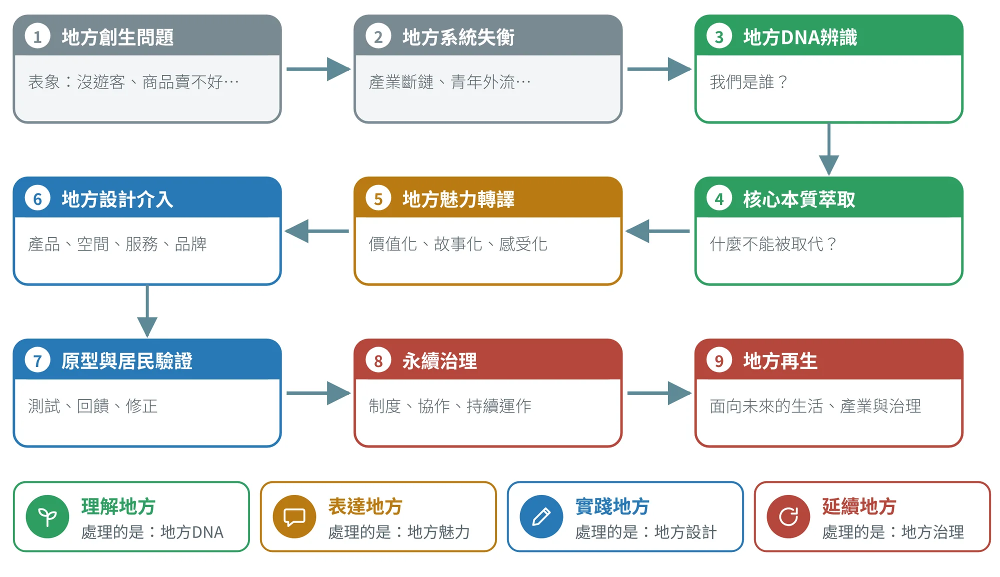
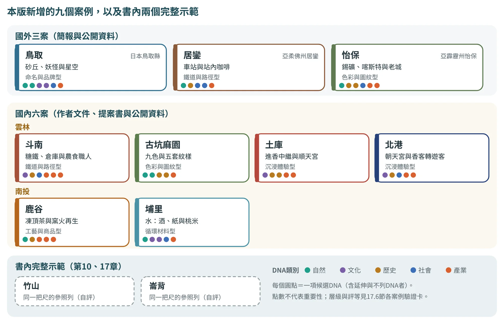
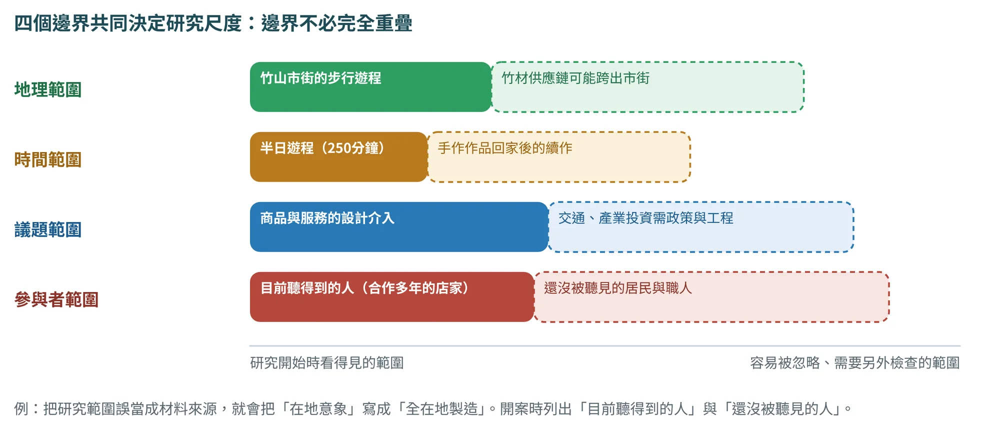

地方創生為什麼要先理解地方？
從地方問題到地方DNA的問題診斷
1.1從一句「我們沒有遊客」說起#
走進任何一個地方創生的會議室，你大概都聽過這些話：「我們沒有遊客」「年輕人不回來」「老街沒有人」「商品賣不好」「不知道地方特色」「活動辦完就沒了」。這些話都是真的，但它們都只是「表象」。就像發燒、咳嗽一樣，它們告訴你身體哪裡不對勁，卻還沒有告訴你為什麼。
好的診斷會繼續追問：為什麼這個地方值得被留下？為什麼值得被來到？為什麼青年值得回來？這個地方有哪些「只有這裡才成立」的知識、文化、材料、關係與生活方式？這幾個問題，就是地方DNA要回答的問題。
因此，本書採取一個和常見做法不同的立場：地方DNA不應該排在流程的最後，做成一份漂亮的「品牌調查」；它應該排在最前面，成為判斷「這個地方到底出了什麼問題」的診斷工具。接下來的流程是：先回答「地方的本質是什麼」，再把本質轉成價值、故事與感受，最後才進入產品、空間、服務、活動與品牌的設計（第3章會詳細說明）。
很多看起來是「行銷、人口、產業、觀光或空間」的問題，只要往前追，背後都有一個更深的「地方認知」問題。這一章要做的，就是學會往前追。
地方不只是問題現場，也是解方的來源
「人口外流、產業沒落、文化斷層、年輕人離開、老人家留下」，這樣的說法聽久了，地方好像就成了一個「問題現場」。但只用問題的眼光看地方，會看不見另一件同樣重要的事：地方也是解方的來源。它保留了人與土地長期相處的方式——農民知道土地什麼時候該休息，漁民知道潮水如何變化，職人知道材料怎麼處理，地方的媽媽知道一道菜背後的季節，廟宇知道社群如何聚在一起。這些不是課本裡的抽象理論，而是地方日常裡長出來的知識。
所以談地方活化，除了問「怎麼吸引觀光客、怎麼賣更多商品」，還要問：這個地方保存了什麼值得面向未來的智慧？哪些資源可以重新被使用？哪些故事可以讓更多人理解？哪些生活方式可以回應今天的永續挑戰？例如，農業廢棄物過去被視為沒有價值，現在可能成為循環材料的起點；一座老車站過去只是交通節點，今天可能成為地方記憶、低碳旅遊與青年返鄉的入口；一門傳統工藝過去被放在保存的框架裡，現在也可以轉化為新的生活用品、新的地方產業，甚至新的教育內容。
1.2問題的三個層級：表象、系統、DNA#
為了不被表象牽著走，可以把地方問題分成三個層級（圖1.1）。
- 第一層 表象問題：人口少、觀光客少、商品不好賣、店家關門、空間閒置、活動不熱絡。
- 第二層 系統問題：產業斷鏈、青年外流、社區組織薄弱、公共空間失效、地方品牌混亂、資源彼此沒有連結。
- 第三層 DNA問題：地方不知道自己是誰、不知道什麼值得留下、不知道哪些資源之間存在關係，也不知道自己的不可替代性。

1.3十二類問題，為什麼都要先理解地方#
下表（表1.1）列出十二類最常見的地方創生問題。每一列從「表面看到的問題」往下追，說明為什麼一定要先理解地方DNA，並提醒「若跳過DNA，容易發生什麼」。請特別留意最右欄——那些後果，你很可能在自己的場域看過。

| 地方創生問題 | 表面看到的問題 | 為什麼一定要先理解地方DNA | 若跳過DNA容易發生什麼 |
|---|---|---|---|
| 1. 地方定位不清楚 | 不知道地方特色是什麼 | 必須辨識哪些自然、文化、歷史、社會、產業元素具有「不可替代性」 | 只會得到「好山、好水、好人情」等任何地方都能使用的定位 |
| 2. 地方品牌同質化 | 每個地方都有Logo、吉祥物、伴手禮 | 品牌必須來自地方深層價值，而不是設計師的風格 | 不同地方看起來越來越像 |
| 3. 文化被表面符號化 | 廟、老街、農產品被直接畫成圖案 | 必須理解符號背後的歷史、信仰、社群與使用關係 | 文化變成裝飾，甚至產生文化誤用 |
| 4. 地方故事說不出來 | 有很多歷史資料，但不知道怎麼說 | DNA可判斷哪些人物、事件、場域與關係真正構成地方核心 | 故事很多，卻沒有「主敘事」 |
| 5. 觀光只有景點，沒有地方體驗 | 遊客拍照後就離開 | 必須理解地方生活節奏、產業、飲食、場域與居民關係 | 形成打卡式觀光，停留短、消費低 |
| 6. 老街、車站、老屋活化失去靈魂 | 空間整修好了卻沒有人使用 | 要先理解空間在地方歷史與居民生活中的真正角色 | 老屋變成咖啡店、文創店，但與地方沒有關係 |
| 7. 傳統產業不知道如何轉型 | 工藝、農業、老店市場衰退 | DNA能找出真正值得保留的是材料、技術、知識、生活方式，還是社會關係 | 只換包裝，沒有形成新的價值鏈 |
| 8. 青年返鄉找不到角色 | 有青年，但沒有工作與創業機會 | 必須知道地方有哪些可被重新組織的知識、材料、產業與服務 | 青年只能開咖啡店、民宿，產業結構沒有改變 |
| 9. 社區缺乏共同認同 | 不同居民對地方發展方向意見不同 | DNA研究可讓居民共同回答「我們是誰、哪些東西最重要」 | 設計成為外部團隊的方案，而非地方共識 |
| 10. 地方創生只靠一次性活動 | 節慶、市集很熱鬧，結束後歸零 | 要知道哪些地方核心能持續轉化成產品、服務、教育與制度 | 每年重新辦活動，卻無法累積地方資產 |
| 11. 地方商品沒有市場差異 | 商品品質不差，但消費者不理解為何要買 | DNA能將物產與風土、文化、技術、人物及故事串起來 | 商品只剩價格競爭 |
| 12. 永續、ESG與地方脫節 | 提案貼上SDGs、ESG標籤 | 必須先知道地方真正面對的環境、社會、產業與治理問題 | 形成「指標先行、地方缺席」的假永續 |
這十二類問題看起來各不相同，卻有一個共同的前置問題：這個地方是誰？什麼不能被取代？什麼值得被轉譯？ 在回答這三個問題以前，任何設計都像是在沒有地基的地方蓋房子。
1.4人口外流與產業沒落：不要急著問「可以做什麼」#
人口外流是結果，不一定是根因
「年輕人一直離開，所以要吸引青年返鄉。」這是最常見的推論，但它還沒有找到真正的問題。青年為什麼離開？可能是沒有產業、沒有工作、地方生活沒有吸引力、看不到自己的角色、地方資源沒有被重新組織、地方文化與青年世代斷裂，或是沒有足以支持創業的社會網絡。換句話說，人口外流是結果，不一定是根因。
所以真正的公式不是「人口外流 → 辦青年返鄉計畫」，而是：

產業沒落：先理解，再轉型
同樣的邏輯也出現在產業：農業沒落就開發農產品包裝、工藝沒落就做文創商品、老街沒落就辦市集、車站沒落就做觀光景點。這些都是「解決方案導向」，而不是「地方理解導向」。更好的順序，是先問七個問題（圖1.4）：這個產業為什麼會在這裡形成？用了什麼地方材料？累積了什麼特殊技術？和居民生活有什麼關係？代表什麼地方記憶？哪一部分已經失去價值？哪一部分反而具有未來價值？

1.5太快開始設計：元素擷取不等於地方DNA#
地方創生最大的風險，不是沒有創意，而是在還沒有理解地方以前，就開始創意。看到漁港就畫魚，看到農村就畫稻穗，看到茶鄉就畫茶葉，看到鐵道就畫火車，看到廟宇就畫燈籠——這些都只是「元素擷取」。問題不在於畫得好不好，而在於：換一個地方，這張圖也成立。

1.6地方DNA前置判斷原則#
是不是所有地方問題都要先做DNA研究？不是。道路破損、自來水不足、醫療服務缺乏、網路覆蓋不足、公共運輸班次不足、防災設施不足，這些問題有相當程度可以直接從工程、公共服務與政策配置來處理。
但是，一旦問題變成下面這些，就進入了「地方性問題」的範疇：這條路應該串連哪些地方節點？公共運輸要服務哪些地方生活模式？老建築該保存還是拆除？哪一種產業值得支持？哪一個文化應該被轉譯？觀光應該如何發展？青年應該進入什麼產業？這時，就需要地方DNA。

請記住這條界線：地方DNA不是解決所有地方問題的方法，而是解決「地方性問題」的重要前提。 劃清界線，反而讓方法更有說服力，也避免把DNA研究變成萬用的藉口。
1.7從問題到再生：一條完整的因果鏈#
把前面的討論接起來，就得到一條從「地方創生問題」到「地方再生」的因果鏈（圖1.7）。它同時也是本書的地圖：每一個環節，後面都有對應的章節與方法。

這條鏈也提出了對「地方創生」的重新定義：
用四個動詞來記：地方DNA處理的是「理解地方」；地方魅力處理的是「表達地方」；地方設計處理的是「實踐地方」；地方治理處理的是「延續地方」。本書前三篇處理前三個動詞，第四篇再回到「延續」——也就是設計的永續轉譯。
本書使用的案例：兩個完整示範與九個驗證案例
前七節把問題接成一條從「現象」到「再生」的因果鏈，後面的章節會用案例說明每個環節怎麼做。本書的案例分成兩層：第一層是兩個完整示範，竹山與崙背，從證據一路走到商品與遊程（第10、11、17章），那是本書自己走完的流程；第二層是3.3版新增的九個驗證案例，包括日本鳥取縣、馬來西亞居鑾與怡保三個國外案例，以及雲林斗南、古坑、土庫、北港與南投鹿谷、埔里六個國內案例（圖1.8）。
這九個案例不是「成功經驗」的陳列，而是用來練習一件事：拿同一把尺，去量不同來源、不同完成度的地方實踐。為了讓這件事公平，先說清楚三點。
- 資料基礎不同。 鳥取、居鑾、怡保、斗南與古坑，有作者的簡報、文件或設計稿；土庫、北港與鹿谷，有縣府、鄉鎮公所或民間團體的提案文件；埔里只有公開的網路資料，其中含媒體與廣編稿。資料基礎越薄，評等能說的就越少。
- 只做桌面審查。 作者沒有到這九個地方做本書方法所要求的田野（第5章）。所有評等都只是「依現有文件，說不說得出證據」，不是對地方成效的評價，也不是對實踐者的批評。要升級評等，唯一的路是補證據。
- 同一把尺。 每個案例都用六道驗證（V1至V6）檢視：證據可追溯、DNA成立、轉譯鏈完整、設計一致、永續四軸、治理與倫理（3.6節）。案例分散在各章，每個案例都在對應的方法出現時再被拿來用一次，表1.2列出它們出現的位置，完整的驗證卡集中在17.6節。

| 案例 | 地方與資料基礎 | 轉譯路徑 | 出現的位置（節） | 概念圖版 |
|---|---|---|---|---|
鳥取縣 國外 | 日本鳥取縣 作者簡報＋縣政府公開資料 | 命名與品牌型 | 2.5、3.4、9.7、15.3 | G.3 |
居鑾 國外 | 馬來西亞柔佛州居鑾（Kluang） 作者簡報（兩份）＋公開資料 | 鐵道與路徑型 | 3.5、15.3 | G.4 |
怡保 國外 | 馬來西亞霹靂州怡保（Ipoh） 作者簡報＋公開資料 | 色彩與圖紋型（兼鐵道路徑） | 3.5、8.4、9.7、15.3 | G.5 |
雲林斗南 國內 | 臺灣雲林縣斗南鎮（舊稱他里霧） 作者簡報與估算文件＋公開資料 | 鐵道與路徑型（兼循環材料型） | 3.6、10.11、11.6、16.4 | G.6 |
雲林古坑麻園 國內 | 臺灣雲林縣古坑鄉麻園 作者設計說明卡與設計稿＋公開資料（沒有田野紀錄） | 色彩與圖紋型 | 2.5、6.6、9.5、9.7、10.11 | G.7 |
雲林土庫 國內 | 臺灣雲林縣土庫鎮（舊稱塗褲） 縣府與鎮公所提案書＋作者簡報＋公開資料 | 沉浸體驗型（兼命名與品牌型） | 2.5、5.4、10.11、15.3 | G.8 |
雲林北港 國內 | 臺灣雲林縣北港鎮（舊稱笨港） 鎮公所提案簡報＋公開資料 | 沉浸體驗型（兼命名與品牌型） | 2.5、9.7、10.11、11.6、15.3 | G.9 |
南投鹿谷 國內 | 臺灣南投縣鹿谷鄉（舊稱羌仔寮） 三份提案文件（2021、2022、2026） | 工藝與商品型（兼循環材料型） | 2.5、9.7、10.11、16.4 | G.10 |
南投埔里 國內 | 臺灣南投縣埔里鎮 公開網路資料（含廣編稿）；沒有作者或提案文件 | 循環材料型（兼工藝與商品型） | 2.4、2.5、9.7、10.11、11.10、15.3 | G.11 |
資料基礎與路徑依本書審查整理；「出現的位置」只列該案例的專屬討論。九個案例並列的比較表在2.3、6.6、7.2、8.4、11.6、16.4節，完整驗證卡在17.6節。來源編號見附錄F.6。
1.8實作：為你的場域做一份問題診斷表#
本章的實作很簡單：選定你的場域，把聽到、看到的問題寫下來，逐條追問，再用前置判斷原則決定下一步。下表（表1.3）以崙背為示範，資料取自公開報導與二手整理，僅用來示範如何追問，正式作業須以田野與官方統計取代。
| ① 看到的問題（表象） | ② 追問：為什麼？（系統） | ③ 涉及四問中的哪一問（DNA） | ④ 下一步 |
|---|---|---|---|
| 人口由1981年的32,318人降至2023年的23,051人，約減少29%〔崙22〕〔崙27〕已查證（二手整理） | 青年離開，地方有哪些「未來的工作」看不清楚待田野確認 | 我們是誰？未來應該往哪裡走？ | 做證據矩陣（第5章） |
| 識得詔安客語者約2.5萬人、會講者約9千人；崙背國小學童三成多具詔安客背景，懂客語的不到一成（校長說法）〔崙10〕〔崙8〕 | 語言傳承斷裂；社區以老幼共學等行動補位 | 詔安客語是不是核心DNA？什麼不能被簡化成圖案？ | DNA萃取與三角檢證（第6章） |
| 中秋夜的迎暗境，早年農村盛行，如今只剩崙背水汴頭完整保留〔崙3〕 | 傳統活動只在單點保存，外人看不到、帶不走 | 澹仔火與迎暗境是否為主題軸？什麼值得被轉譯？ | 轉譯為文化語彙，再設計商品或遊程（第7、10章） |
〔崙n〕為崙背示範資料來源，見附錄F；已查證指已依公開資料核對，待田野確認指需訪談與現場確認。
1.9把寬泛願景改寫成可研究的任務#
地方創生常從迫切的症狀開始：遊客變少、青年外流、店面閒置、商品賣不動。這些現象值得重視，卻還不是足夠清楚的設計題目。「做一套年輕人喜歡的品牌」看起來很具體，實際上可能跳過了工作機會、交通、產業協作與居民期待等更根本的問題。進入設計之前，要先問四個問題：我們正在談誰的地方、哪一段時間與哪個生活範圍？哪些事物對地方重要，卻正在失去被理解或被使用的機會？設計可以改變哪個環節，哪些環節需要政策、工程或產業投資？誰有權參與決定，誰又會承擔後果？
例如，交通不便首先需要交通服務與公共資源的判斷。設計可以改善候車資訊與旅程安排，但不能宣稱一個識別系統就能解決交通供給不足；不能因為課程名稱含有DNA，就把所有問題都改寫成文化包裝。
好的任務書不必一開始就指定答案。它要說明對象、情境、問題、範圍、限制與成功的判準。「為竹山做伴手禮」範圍太大；「協助手作旅客把未完成的竹杯作品安全帶回家」則能引導觀察、包裝與服務的研究，也容許最後發現其實不必新增商品。表1.4舉出四種常見的寬泛說法，示範如何改寫成可以研究的問法。
| 原始說法 | 可以研究的問法 | 可能需要的證據 |
|---|---|---|
| 地方沒有特色 | 哪些日常技藝對居民重要，外來者卻不理解？ | 居民敘事、工作觀察、旅客理解測試 |
| 年輕人不回來 | 哪些地方角色有收入與成長機會？設計可以協助哪一段？ | 工作條件、產業需求、青年訪談 |
| 商品沒有質感 | 使用者在哪一刻覺得不便、不可信或不適合送禮？ | 購買觀察、開箱任務、材料比較 |
| 老街需要活化 | 誰使用街區、在什麼時段、有哪些空間與服務缺口？ | 時段觀察、使用地圖、店家與居民意見 |
也要把利益關係人的願望與可驗證的問題分開記錄。業者希望提高客單價，旅客希望減少攜帶負擔，職人希望不壓縮手工品質，三者可能互相衝突。任務書的功能，是讓衝突可以被看見，再以原型與協商處理，而不是提早用一句「打造共好品牌」把它掩蓋。
一頁任務書的六個句子
- 我們服務的是誰？
- 他在什麼情境，遇到什麼問題？
- 這個問題與哪一項地方資產或關係有關？
- 本期可以投入什麼資源？
- 哪些事暫時不處理？
- 我們將用什麼行為或證據，來判斷有沒有改善？
每一句都要允許被資料修正。成功的判準，應同時包含使用與地方兩個面向：旅客能不能完成任務是一面；職人的備料時間、居民對故事的接受程度、店家願不願意持續合作，是另一面。只測「喜歡程度」，回答不了地方能不能承接這個方案。
研究邊界：四個範圍不必重疊
初次進入場域，可以先畫出四個邊界：地理範圍、時間範圍、議題範圍與參與者範圍。它們不必完全重疊（圖1.9）。竹山市街的步行遊程有地理邊界，竹材的供應鏈卻可能跨出市街；若把研究範圍誤當成材料來源，就容易把「在地意象」寫成「全在地製造」。

在職研究生可以從既有的工作網絡出發，但熟悉不代表沒有偏差：與自己合作多年的店家，可能比沒有加入網絡的居民更容易被聽見。開案時列出「目前聽得到的人」與「還沒有被聽見的人」，是相當有效的自我檢查。
請AI協助整理開案資料時，可使用附錄B.3的U5：它要求AI把「症狀」「可能原因」「可研究的問題」與「設計可以介入之處」分開整理，提出三個範圍不同的任務句，並列出必須由團隊決定的取捨。AI可以重組說法，但不能把「可能原因」升格為因果結論；選擇哪一個問題，由團隊與地方夥伴共同決定。